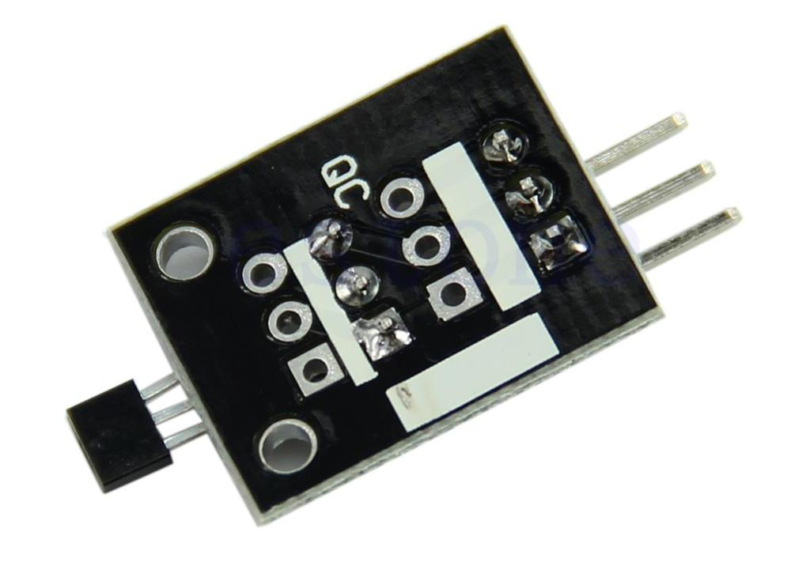
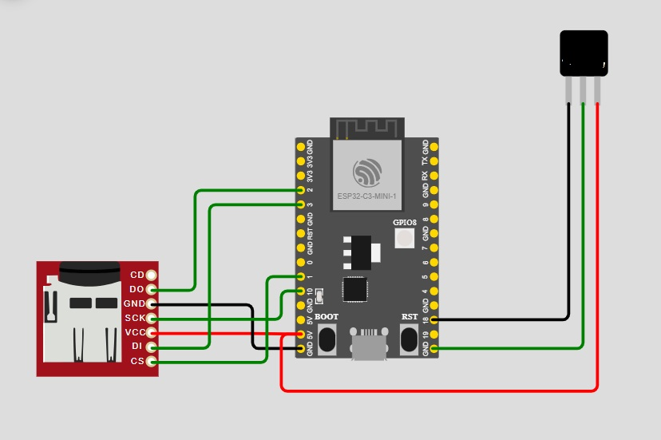

Hardware Utilizado
ESP32-C3 Mini

La ESP32-C3 Mini es un módulo compacto basado en el microcontrolador ESP32-C3, desarrollado por Espressif. Utiliza una arquitectura RISC-V de 32 bits y puede operar hasta 160 MHz, ofreciendo un buen equilibrio entre rendimiento y bajo consumo energético.
Sensor de Efecto Hall 3144 (SEN-HALL-ECO)

El sensor de efecto Hall 3144 es un dispositivo digital capaz de detectar la presencia de un campo magnético. En este proyecto se utiliza para medir variaciones de campo magnético generadas por movimiento, permitiendo calcular velocidad o detectar posiciones específicas.
Conexiones
